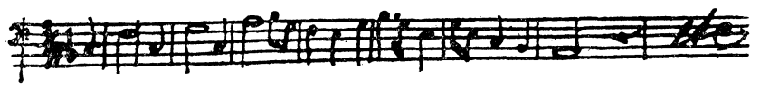
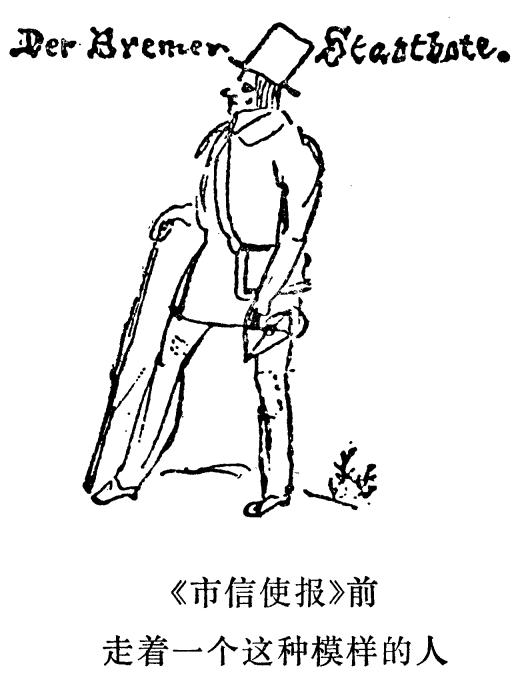

|
巴门 1839年3月11―12日于不来梅 3月11日 |
亲爱的海尔曼：
敬请阁下今后写信不要用从里佩先生那里学来的这套开场白折磨我。我现在认为，我们这里每天早上都是冬天，而中午是夏天，因为早上我们这里的气温是零下5度，而中午是10度。我仍在按部就班地练习唱歌和作曲，看，这就是我所作的一段曲子的样品：

你可以按照这个曲调唱“盲人”，也可以不这样唱。
3月12日。你很快就要有自己的狗了，这使我很高兴。母狗是什么品种，这只小狗长得怎么样？老古董洛伊波尔德先生现在来到商行。现在我要象伟大的莎士比亚所说的那样，言归正传。这里新出了一种报纸，叫《不来梅市信使报》；编辑是阿尔伯特·迈耶尔，他是个大笨蛋。

他从前曾以人民的幸福、孩子的教育以及其他题目开过讲座，他想发表这些讲稿，但是可爱的上司不同意，因为这实在太荒唐了。此人天生是个瓷器商，他从该报的第一号就同《杂谈报》FN1发生争吵。他们彼此大肆攻击，简直令人捧腹。下文请见给玛丽亚的信。
你的爱你的哥哥 弗里德里希·恩格斯
|
第一次发表于《马克思恩格斯全集》1930年国际版第1部分第2卷 原文是德文 |
脚 注
FN1 《不来梅杂谈报》。——编者注